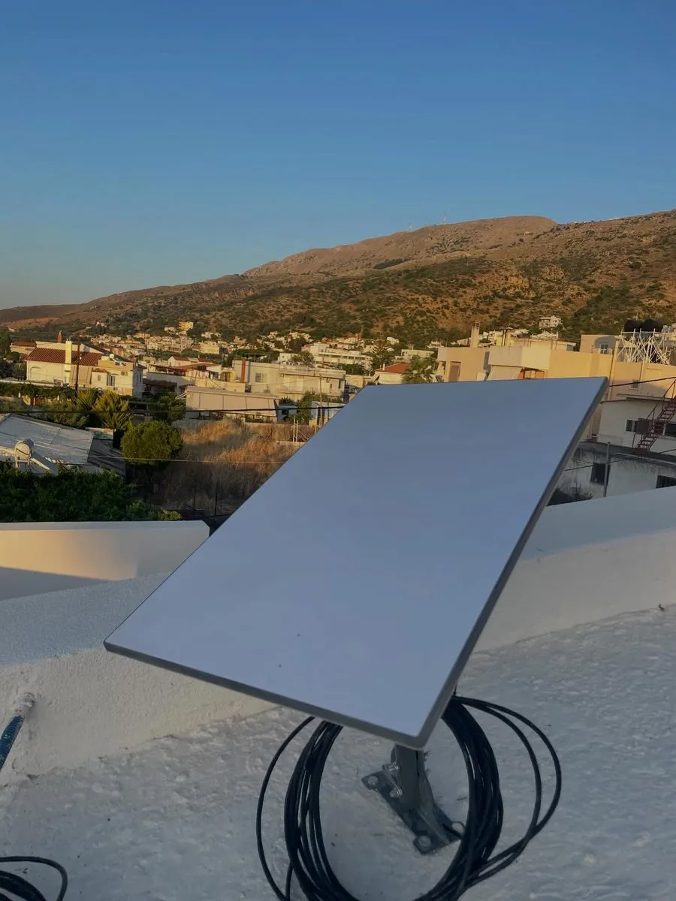
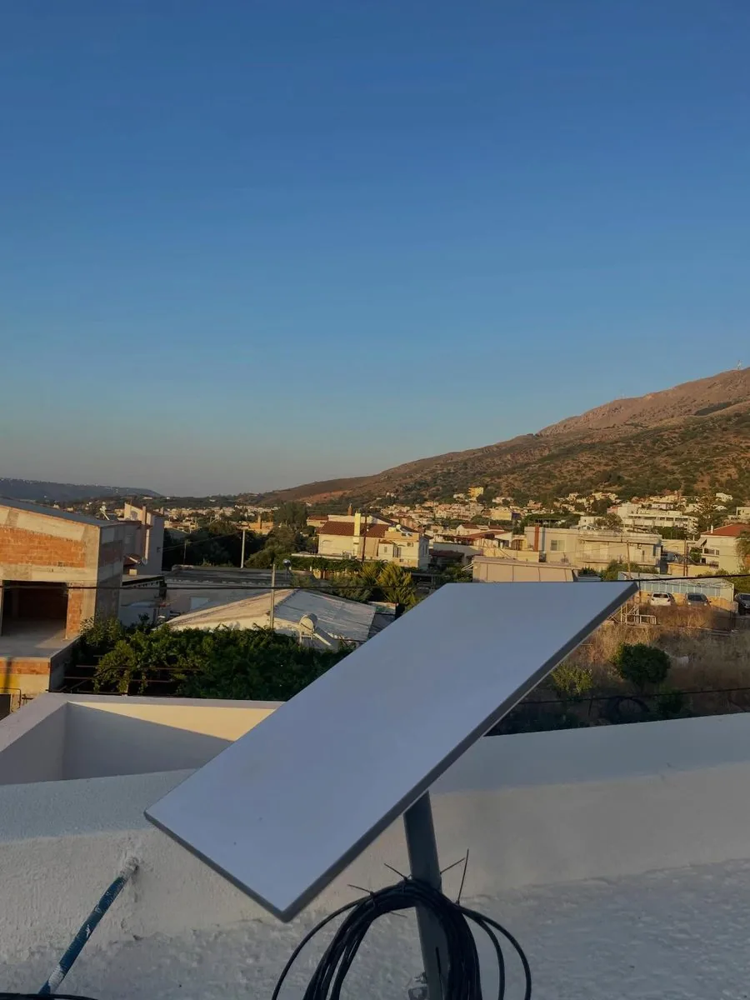
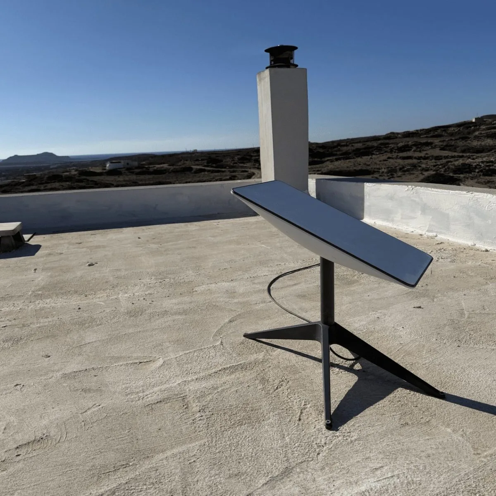
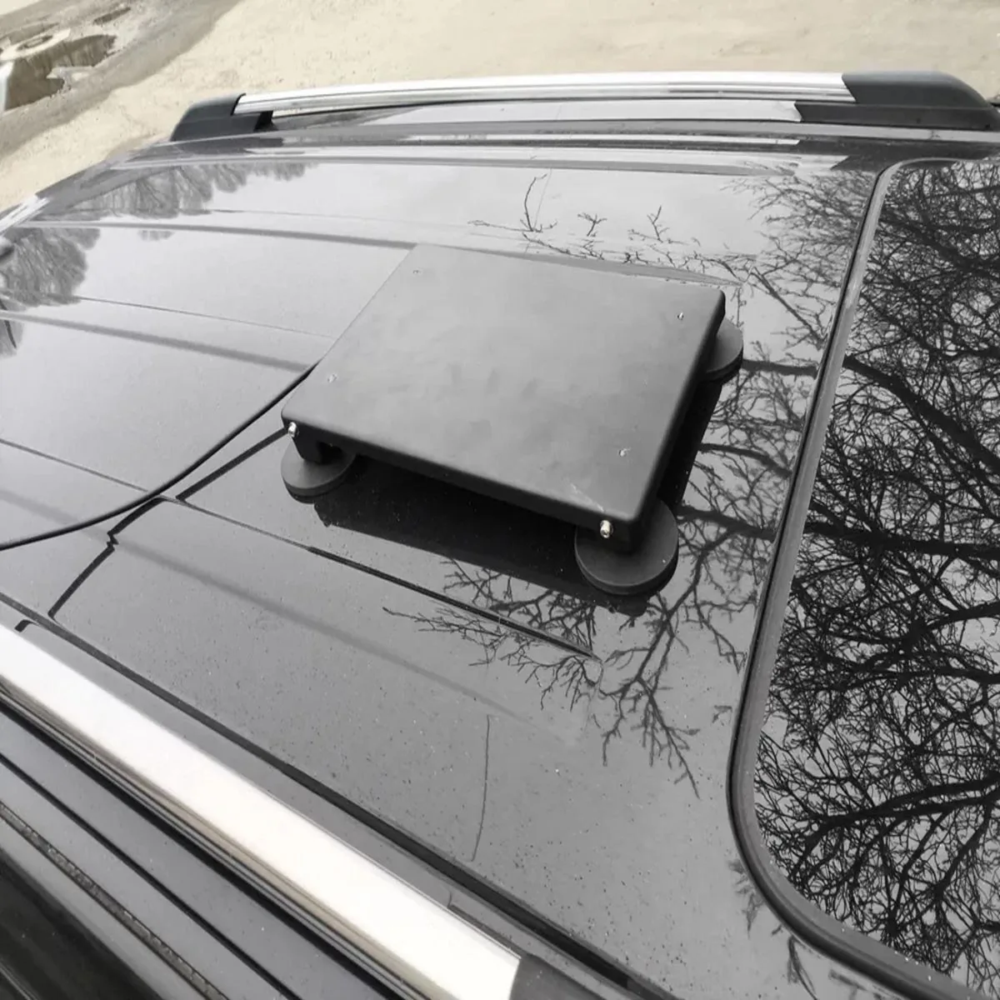
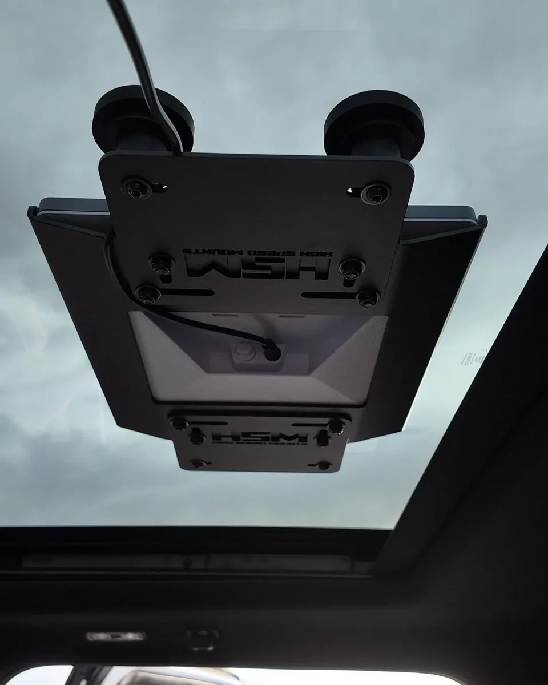

Εγκατάσταση Starlink στην Κρήτη
Δορυφορικό ίντερνετ με υποστήριξη
Επαγγελματική εγκατάσταση Starlink σε όλη την Κρήτη, για σπίτια, βίλες, κτήματα και επιχειρήσεις όπου το ίντερνετ είναι αργό, πέφτει συνέχεια ή δεν υπάρχει καθόλου. Δεν βάζω απλώς την κεραία στη στέγη: στήνω όλο το δίκτυο, ώστε να έχετε Wi-Fi σε κάθε χώρο, εφεδρική σύνδεση αν τη χρειάζεστε, και κάποιον να το προσέχει από μακριά.
Εξυπηρετώ Ηράκλειο · Χανιά · Ρέθυμνο · Λασίθι · όλη την Κρήτη
Γιατί εμένα
Την κεραία μπορεί να τη στήσει ο καθένας· η διαφορά φαίνεται σε ό,τι ακολουθεί. Ως πιστοποιημένος μηχανικός δικτύων με ειδίκευση στην ασφάλεια, φροντίζω η σύνδεση να μη σας αφήνει ποτέ χωρίς ίντερνετ, το δίκτυό σας να είναι κλειστό σε αγνώστους, και τα περισσότερα προβλήματα να λύνονται από μακριά, χωρίς να χρειαστεί να ξανάρθω.
- Πιστοποιημένος μηχανικός δικτύων
- Εφεδρική σύνδεση, για να μη μένετε ποτέ χωρίς ίντερνετ
- Υποστήριξη από μακριά — τα περισσότερα λύνονται χωρίς επίσκεψη
Σε ποιους απευθύνεται
Βίλες & Αγροτουρισμός
Wi-Fi που πιάνει σε κάθε δωμάτιο, ακόμα και σε απομονωμένες βίλες — τόσο αξιόπιστο που δεν θα το δείτε ποτέ στις κριτικές, με χωριστό δίκτυο για τους επισκέπτες.
Αγροτικά Σπίτια & Κτήματα
Γρήγορο ίντερνετ εκεί που η γραμμή σέρνεται ή δεν φτάνει καθόλου — ορεινά χωριά, ελαιώνες, κτήματα μακριά από όλα.
Εργοτάξια & Απομακρυσμένα Γραφεία
Ίντερνετ από την πρώτη μέρα σε εργοτάξια, προσωρινά γραφεία και εποχικές δουλειές.
Εφεδρική Γραμμή Επιχείρησης
Αν πέσει η κύρια γραμμή, το Starlink μπαίνει αυτόματα — οι κάρτες περνάνε και το Wi-Fi δουλεύει κανονικά, χωρίς χαμένες πωλήσεις.
Πρόσφατες εγκαταστάσεις


Εγκατάσταση σε ταράτσα · Χανιά
Νέα εγκατάσταση Starlink. Απλή, καθαρή, αξιόπιστη — πάντα με στόχο το καλύτερο σήμα, προσεγμένο αποτέλεσμα και ευχαριστημένο πελάτη.

Εγκατάσταση σε ταράτσα · ορίζοντας θάλασσας
Ακόμα μία σε λειτουργία. Νέα εγκατάσταση Starlink σε ταράτσα στην Κρήτη — γρήγορο ίντερνετ εκεί που δεν φτάνουν τα καλώδια. Θάλασσα από τη μία, βουνά από την άλλη, και στη μέση Wi-Fi με ταχύτητα οπτικής ίνας. Χωρίς τηλεφωνική γραμμή, χωρίς κανένα πρόβλημα.

Camper · βάση στην οροφή
Ίντερνετ στον δρόμο. Το Starlink μπαίνει στην οροφή χωρίς τρύπες και βίδες, οπότε το όχημα μένει ανέγγιχτο και η βάση βγαίνει όποτε θέλετε.

Όχημα · από την ηλιοροφή
Άλλο όχημα, ίδια λογική. Τίποτα δεν βιδώθηκε και τίποτα δεν τρυπήθηκε, οπότε το αυτοκίνητο κρατάει την αξία του. Μπαίνει και βγαίνει σε λίγα λεπτά.
Πραγματικές εγκαταστάσεις σε όλη την Κρήτη — φωτογραφίες από πρόσφατα έργα.
Πώς γίνεται
1
Αυτοψία χώρου
Έρχομαι στον χώρο και βρίσκω το σημείο με καθαρό ουρανό, χωρίς δέντρα και τοίχους μπροστά.
2
Εγκατάσταση
Στέρεη βάση που αντέχει τον αέρα, στεγανή καλωδίωση και προσεγμένο πέρασμα μέσα στο σπίτι.
3
Wi-Fi & δίκτυο
Ρυθμίζω το Wi-Fi να πιάνει σε όλο τον χώρο, χωριστό δίκτυο για επισκέπτες και, αν θέλετε, εφεδρική σύνδεση.
4
Υποστήριξη
Το παρακολουθώ από μακριά και επεμβαίνω αν κάτι δεν πάει καλά, για να δουλεύει χωρίς διακοπές.
Πακέτα
Εγκατάσταση
Εφάπαξ εγκατάσταση, σωστά από την πρώτη φορά.
- Αυτοψία χώρου & έλεγχος εμποδίων
- Στέρεη βάση & στεγανή καλωδίωση
- Ρύθμιση Wi-Fi
Δημοφιλές
Εγκατάσταση + Υποστήριξη
Ό,τι έχει η Εγκατάσταση, και το προσέχω και μετά.
- Εφεδρική σύνδεση & χωριστό δίκτυο επισκεπτών
- Παρακολούθηση από μακριά & ενημερώσεις εξοπλισμού
- Υποστήριξη κατά προτεραιότητα
Εφεδρεία Επιχείρησης
Το Starlink ως εφεδρική γραμμή, για να μη σταματάει ποτέ η δουλειά σας.
- Αυτόματη εναλλαγή όταν πέσει η κύρια γραμμή
- Προστασία δικτύου & ασφαλής πρόσβαση από μακριά
- Ειδοποιήσεις & εγγυημένος χρόνος ανταπόκρισης
Ο εξοπλισμός (κιτ Starlink) χρεώνεται ξεχωριστά. Η τελική προσφορά δίνεται μετά την αυτοψία.
Ένας μήνας δωρεάν
Ένας μήνας Starlink δωρεάν
Αν παραγγείλετε το Starlink μέσα από τον σύνδεσμό μου, ο πρώτος μήνας συνδρομής είναι δωρεάν. Ισχύει και στις δύο περιπτώσεις: είτε το εγκαταστήσω εγώ, είτε το στήσετε μόνοι σας. Σκανάρετε τον κωδικό ή πατήστε το κουμπί.
Πάρτε τον δωρεάν μήνα
Η προσφορά δίνεται μέσω του προγράμματος συστάσεων της Starlink· ισχύουν οι δικοί της όροι και η διαθεσιμότητα.
Ερωτήσεις
Καλύπτετε την περιοχή μου;
Εξυπηρετώ όλη την Κρήτη — Ηράκλειο, Χανιά, Ρέθυμνο και Λασίθι, μαζί με απομακρυσμένα και ορεινά μέρη. Αν βλέπετε ουρανό, το Starlink συνήθως δουλεύει.
Πόσο γρήγορο και αξιόπιστο είναι;
Συνήθως 100–250 Mbps — όσο μια καλή σύνδεση στην πόλη, αρκετό για βιντεοκλήσεις, ταινίες και δουλειά από το σπίτι ταυτόχρονα. Αν θέλετε, προσθέτω και δεύτερη σύνδεση, ώστε μια σύντομη διακοπή να μη σας αφήνει χωρίς ίντερνετ.
Πρέπει να αγοράσω πρώτα το κιτ Starlink;
Μπορείτε να το αγοράσετε μόνοι σας, ή να σας βοηθήσω να διαλέξετε το σωστό κιτ (Standard, Mini ή High Performance) για τον χώρο σας πριν το παραγγείλετε.
Μπορεί να συνδεθεί με το Wi-Fi και τον εξοπλισμό που ήδη έχω;
Ναι — αυτή είναι η δουλειά μου. Δουλεύω με όλες τις γνωστές μάρκες (Cisco, MikroTik, UniFi), και το Starlink μπαίνει στο δίκτυο που ήδη έχετε χωρίς να χρειαστεί να αλλάξετε τα πάντα.